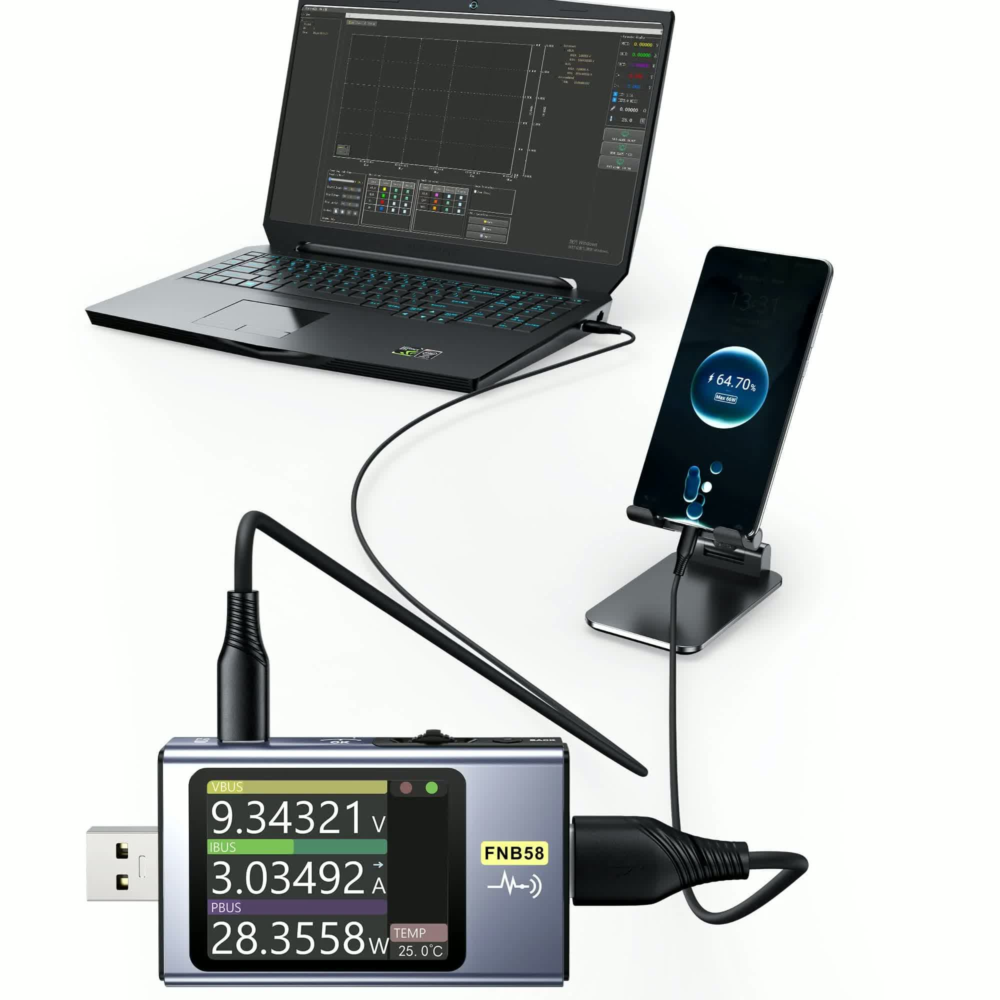

Buy on Shopee
Buy on Shopee
PC Desktop Repair
Useful for checking power rails, motherboard signals, components, and troubleshooting common computer hardware problems.
A practical FNIRSI tool for technicians, makers, and service shops working on desktop computers, power boards, controllers, and other electronic devices.

Useful for checking power rails, motherboard signals, components, and troubleshooting common computer hardware problems.
Supports repair work for adapters, controllers, small appliances, gadgets, and many other electronic boards.
Clear operation, compact body, and reliable performance for daily diagnostic work on the repair bench.